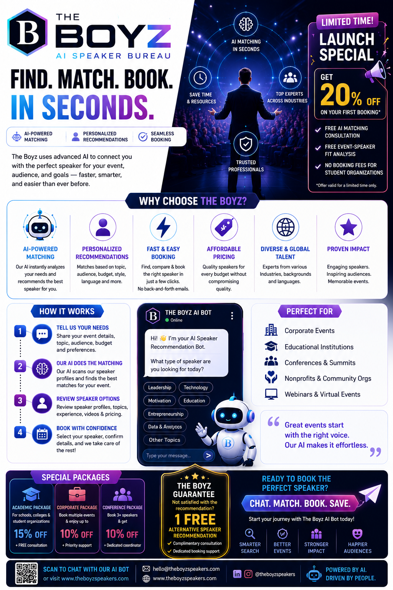
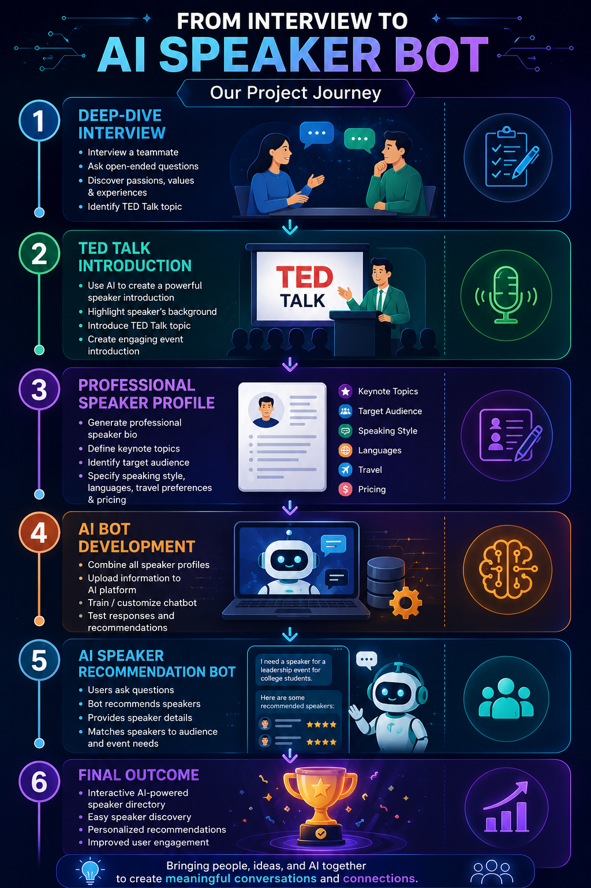

01
WIP Engagement Forecasting
Engineered historical comparison models across Azure, Databricks, and SQL Server, then deployed a reusable Ridge Regression pipeline to forecast engagement hours and improve resource-planning visibility.
I am a data analyst, machine learning practitioner, and cross-border commercial consultant who builds analytics systems, predictive models, and practical solutions for business teams.
About
My work sits at the intersection of analytics engineering, machine learning, and commercial execution.
In corporate analytics roles, I build SQL data models, KPI frameworks, Power BI reporting, and reusable machine learning pipelines that help leaders make faster, more consistent decisions.
In parallel, I support cross-border physical commodity transactions between U.S. suppliers and buyers in Asia. That work requires a different kind of rigor: understanding transaction economics, coordinating logistics and documentation, resolving discrepancies, and communicating across markets.
The common thread is simple: I translate technical complexity into business action.
Selected Work
Client-sensitive details are intentionally generalized while preserving the problem, approach, and result.
Engineered historical comparison models across Azure, Databricks, and SQL Server, then deployed a reusable Ridge Regression pipeline to forecast engagement hours and improve resource-planning visibility.
Designed and maintained 30+ Power BI dashboards, standardized KPI definitions, and integrated data from Azure KQL, SQL, and Qualtrics to support daily financial and operational decision-making.
Supported more than $2M in hardwood commodity transactions by evaluating grade mix, board-foot volume, supplier pricing, freight, fumigation, rail, and ocean costs while coordinating execution across parties.
Applied NLP and machine learning techniques to map an n-tier supplier network containing more than 5,000 suppliers, improving visibility into sourcing dependencies and supply-chain risk.
Collaborated on an academic AI speaker bureau project that turns interview insights and structured speaker profiles into an interactive recommendation experience for event organizers.
Featured Academic Project
A team-built conversational AI prototype designed to help event organizers discover and match speakers based on event type, audience, goals, topic, language, style, and budget. My contribution centered on interview-based speaker profiling, professional profile design, communication, and the project narrative.
If the embedded prototype does not load in your browser, use the “Launch the Chatbot” button above.


Human-centered interviewing, structured information design, AI-assisted content development, cross-functional collaboration, audience-focused communication, and the ability to translate a concept into a usable digital experience.
Experience
SQL data modeling, MDM normalization, predictive modeling, and scalable analytics workflows.
Transaction economics, supplier and buyer coordination, logistics documentation, and commercial negotiation.
Power BI reporting, KPI governance, Python analysis, Azure KQL, SQL, and executive decision support.
Supply-chain analytics, advanced SQL, Alteryx, and Python time-series forecasting.
NLP/ML supplier mapping and supply-chain risk analysis.
Capabilities
SQL, Python, Pandas, NumPy, Azure, Databricks, SQL Server, Alteryx, data modeling, and MDM normalization.
Power BI, DAX, KQL, KPI design, semantic modeling, executive reporting, and data governance.
scikit-learn, Ridge Regression, time-series forecasting, TensorFlow, NLP, word2vec, and reusable pipelines.
Transaction economics, cross-border sourcing, negotiation, supplier and buyer coordination, freight, and documentation.
Education
M.S. in Business Analytics & Information Management, 2023
B.S. in Supply Chain Information & Analytics, 2022
Contact
Based in Chicago. Fluent in English and Mandarin. Available for conversations about analytics, AI solutions, technical GTM, and cross-border commercial strategy.